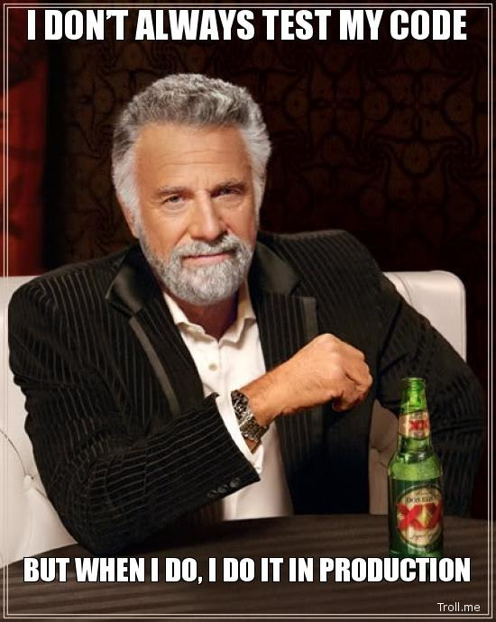

<!DOCTYPE html>
<meta charset="utf-8">
<title>Testing Toolbox</title>

<!-- Your Slides -->
<!-- One section is one slide -->

<section>
    <!-- This is the first slide -->
    <h1>Testing Toolbox</h1>
    <footer>
    Ben Oakes<br />
    @benjaminoakes<br />
    hedgeye.com
    </footer>
</section>

<section>
    <h3>I want to...</h3>
    <ul>
      <li>...give you a better set of testing tools
      <li>...help you test your apps more effectively
      <li>...give you something you can use tomorrow
    </ul>
</section>

<section>
    <h2>Why do we test?</h2>
</section>

<section>
    <h2>We don't want to be this guy...</h2>
</section>

<section>
    
</section>

<section>
    <h3>Pros</h3>
    <ul>
      <li>Feel safe deploying
      <li>Maintainability
      <li>Better designs
    </ul>
</section>

<section>
    <h3>Cons</h3>
    <ul>
      <li>Bad tests == harder maintenance
      <li>Takes time
      <li>Thus, perception of low ROI
      <li>But what is high-ROI?
    </ul>
</section>

<section>
    <h2>High-Level,<br />High-ROI Testing</h2>
</section>

<section>
    <h4>gem 'tarantula' # 'tarantula-rails3'</h4>

    <ul>
    <li>"Fuzzy spider" your site
    <li>Crawl links, fuzz test forms
    <li>Find 404s, 500s, etc
    <li>Teach it to log in
    <li>Set it and forget it (until you introduce a bug)
    </ul>
</section>

<section>
    <h4>gem 'jasmine'</h4>
    <ul>
    <li>"rspec for JS" (unit testing lib)
    </ul>

    <h4>jasmine-jstd-adapter (jsTestDriver)</h4>
    <ul>
    <li>Auto-run your specs on IE 6+, iPhone, Firefox, etc
    <li>Even with 1 spec, you'll find weird IE problems quicker (e.g., syntax)
    </ul>
</section>

<section>
    <h4>Browser Simulators</h4>
    <ul>
    <li>Hook 'em up to JSTD, they become Jasmine spec runners!
    <li>IETester (IE5.5+ in a single Windows app)
    <li>Apple's iOS Simulator (iPhone + iPad, in iOS SDK)
    <li>Android Emulator (Android SDK)
    <li>BlackBerry simulator (painful)
    </ul>
</section>

<section>
    <h4>Screen Reader Simulators</h4>
    <ul>
    <li>Another type of browser
    <li>On a Mac?  You have one built into Safari
    <li>Try out your site and see what the blind get
    <li>Details: <a href="http://www.456bereastreet.com/archive/200505/voiceover_and_safari_screen_reading_on_the_mac/">456 Berea Street article</a>
    </ul>
</section>

<section>
    <h4>Email Simulators</h4>
    <ul>
    <li>Email on Acid (emailonacid.com)
    <li>Paid, but worth it if you send a lot of email
    <li>Tests Gmail, Yahoo Mail, Thunderbird, Lotus Notes, etc
    <li>See all those Outlook bugs in one place
    </ul>
</section>

<section>
    <h4>Selenium IDE</h4>
    <ul>
    <li>Testing a GUI?  Or no tests?  Put a Selenium script behind it
    <li>Record your actions in a browser, make assertions
    <li>Use JavaScript when you need more logic
    </ul>
</section>

<section>
    <h2>Low-Level Testing, Accelerated</h2>
</section>

<section>
    <h3>Pick one: "rspec" or "test/unit"</h3>
    <ul>
    <li>Using test/unit?
    <ul>
      <li>gem 'shoulda'
      <li>gem 'mocha'
    </ul>
    </ul>
</section>

<section>
    <h4>gem 'autotest' # 'ZenTest'</h4>
    <ul>
    <li>Runs your tests as soon as you change then
    <li>Leave it up on a separate monitor
    </ul>
    <h4>gem 'guard'</h4>
    <ul>
    <li>An alternative
    <li>Does more than tests
    </ul>
</section>

<section>
<h4>gem 'timecop'</h4>
<ul>
<li>Make time-based tests a breeze
<li><code>Timecop.travel</code> and  <code>Timecop.freeze</code>
</ul>
<footer>
<pre><code>
d = Date.parse('1999-12-31')
Timecop.freeze(d) do
  party
end</code></pre>
</footer>
</section>

<section>
<h4>gem 'fakeweb'</h4>
<h4>gem 'webmock'</h4>
<ul>
<li>Easily stub HTTP interactions
<li>Great for testing integration with web services
<li>Sucks because you have to copypasta the XML, JSON, etc
<li>So, best used in combination with...
</ul>
</section>

<section>
<h4>gem 'vcr'</h4>
<ul>
<li>Record HTTP interactions to cassettes (<code>.yml</code> files)
<li>Replay them during future test runs
<li>Fast, deterministic, accurate tests
<li>Saves tons of time
</ul>
<footer>
<pre><code>VCR.use_cassette('ex') do
  # Net::HTTP.get...
end
</code></pre>
</footer>
</section>

<section>
<h4>gem 'fakefs'</h4>
<ul>
<li>A fake filesystem
<li>Refactoring to use <code>mkdir_p</code> instead of <code>mkdir</code> doesn't break your test!
<li>I don't use it too often, but nice to have handy
</ul>
<footer>
<pre><code>
FakeFS do
  # your code
end
</code></pre>
</footer>
</section>

<section>
<h4>gem 'factory_girl_rails'</h4>
<ul>
<li>Better than fixtures
<li>Build objects for testing
<li>Powerful definitions
</ul>
<footer>
<pre><code>
FactoryGirl.define do
  factory :user do
    first_name 'John'
    last_name  'Doe'
  end
end
</code></pre>
</footer>
</section>

<section>
<h4>gem 'fabrication'</h4>
<ul>
<li><code>factory_girl</code> has a Rails bias
<li><code>fabrication</code> is up and coming
<li>I haven't used it much but it looks awesome
</ul>
<footer>
<pre><code>
class Person; end
Fabricator(:person) do
  name 'Greg Graffin'
  profession 'Professor'
end
</code></pre>
</footer>
</section>

<section>
    <h2>This is what's in my toolbox</h2>
</section>

<section>
    <h2>I hope I've given you something you can use tomorrow</h2>
</section>

<section>
    <h2>Thanks!</h2>
    <footer>
	  <p>Any questions?<p>
	  <p><a href="http://twitter.com/benjaminoakes">@benjaminoakes</a>
    <p>I'll tweet a link to the slides</p>
    </footer>
</section>

<!-- Your Style -->
<!-- Define the style of your presentation -->

<!-- Maybe a font from http://www.google.com/webfonts ? -->
<link href='http://fonts.googleapis.com/css?family=Oswald' rel='stylesheet'>

<style>
  html { background-color: black; }
  body { background-color: white; }
  /* A section is a slide. It's size is 800x600, and this will never change */
  section {
      /* The font from Google */
      font-family: 'Oswald', arial, serif;
      font-size: 40px;
  }
  h1, h2 {
    margin-top: 200px;
    text-align: center;
    font-size: 80px;
  }
  h3 {
    margin: 100px 0 50px 100px;
  }

  ul {
      margin: 50px 100px;
  }

  q {
    display: inline-block;
    width: 700px;
    height: 600px;
    background-color: black;
    color: white;
    font-size: 60px;
    padding: 50px;
  }

  img, video {
    width: 800px;
    height: 600px;
    position: absolute;
    top: 0;
    background-color: black;
    z-index: -1;
  }

  footer {
    position: absolute;
    bottom: 10px;
    right: 20px;
  }

  /* Transition effect */
  /* Feel free to change the transition effect for original
     animations. See here:
     https://developer.mozilla.org/en/CSS/CSS_transitions
     How to use CSS3 Transitions: */
  section {
      -moz-transition: left 400ms linear 0s;
      -webkit-transition: left 400ms linear 0s;
      -ms-transition: left 400ms linear 0s;
      transition: left 400ms linear 0s;
  }

  /* Before */
  section { left: -150%; }
  /* Now */
  section[aria-selected] { left: 0; }
  /* After */
  section[aria-selected] ~ section { left: +150%; }

  /* Incremental elements */

  /* By default, visible */
  .incremental > * { opacity: 1; }

  /* The current item */
  .incremental > *[aria-selected] { color: red; opacity: 1; }

  /* The items to-be-selected */
  .incremental > *[aria-selected] ~ * { opacity: 0.2; }

</style>

<!-- {{{{ dzslides core
#
#
#     __  __  __       .  __   ___  __
#    |  \  / /__` |    | |  \ |__  /__`
#    |__/ /_ .__/ |___ | |__/ |___ .__/ core :€
#
#
# The following block of code is not supposed to be edited.
# But if you want to change the behavior of these slides,
# feel free to hack it!
#
-->

<!-- Default Style -->
<style>
  * { margin: 0; padding: 0; }
  details { display: none; }
  body {
    width: 800px; height: 600px;
    margin-left: -400px; margin-top: -300px;
    position: absolute; top: 50%; left: 50%;
    overflow: hidden;
  }
  section {
    position: absolute;
    pointer-events: none;
    width: 100%; height: 100%;
  }
  section[aria-selected] { pointer-events: auto; }
  html { overflow: hidden; }
  body { display: none; }
  body.loaded { display: block; }
  .incremental {visibility: hidden; }
  .incremental[active] {visibility: visible; }
</style>

<script>
  var Dz = {
    remoteWindows: [],
    idx: -1,
    step: 0,
    slides: null
  };

  Dz.init = function() {
    document.body.className = "loaded";
    this.slides = $$("body > section");
    this.onhashchange();
    this.setupTouchEvents();
    this.onresize();
  }

  Dz.onkeydown = function(aEvent) {
    // Don't intercept keyboard shortcuts
    if (aEvent.altKey
      || aEvent.ctrlKey
      || aEvent.metaKey
      || aEvent.shiftKey) {
      return;
    }
    if ( aEvent.keyCode == 37 // left arrow
      || aEvent.keyCode == 38 // up arrow
      || aEvent.keyCode == 33 // page up
    ) {
      aEvent.preventDefault();
      this.back();
    }
    if ( aEvent.keyCode == 39 // right arrow
      || aEvent.keyCode == 40 // down arrow
      || aEvent.keyCode == 34 // page down
    ) {
      aEvent.preventDefault();
      this.forward();
    }
    if (aEvent.keyCode == 35) { // end
      aEvent.preventDefault();
      this.goEnd();
    }
    if (aEvent.keyCode == 36) { // home
      aEvent.preventDefault();
      this.goStart();
    }
    if (aEvent.keyCode == 32) { // space
      aEvent.preventDefault();
      this.toggleContent();
    }
  }

  /* Touch Events */

  Dz.setupTouchEvents = function() {
    var orgX, newX;
    var tracking = false;

    var db = document.body;
    db.addEventListener("touchstart", start.bind(this), false);
    db.addEventListener("touchmove", move.bind(this), false);

    function start(aEvent) {
      aEvent.preventDefault();
      tracking = true;
      orgX = aEvent.changedTouches[0].pageX;
    }

    function move(aEvent) {
      if (!tracking) return;
      newX = aEvent.changedTouches[0].pageX;
      if (orgX - newX > 100) {
        tracking = false;
        this.forward();
      } else {
        if (orgX - newX < -100) {
          tracking = false;
          this.back();
        }
      }
    }
  }

  /* Adapt the size of the slides to the window */

  Dz.onresize = function() {
    var db = document.body;
    var sx = db.clientWidth / window.innerWidth;
    var sy = db.clientHeight / window.innerHeight;
    var transform = "scale(" + (1/Math.max(sx, sy)) + ")";

    db.style.MozTransform = transform;
    db.style.WebkitTransform = transform;
    db.style.OTransform = transform;
    db.style.msTransform = transform;
    db.style.transform = transform;
  }


  Dz.getDetails = function(aIdx) {
    var s = $("section:nth-of-type(" + aIdx + ")");
    var d = s.$("details");
    return d ? d.innerHTML : "";
  }

  Dz.onmessage = function(aEvent) {
    var msg = aEvent.data;
    var win = aEvent.source;
    if (msg === "register") {
      this.remoteWindows.push(win);
      win.postMessage(JSON.stringify({
        method: "registered",
        title: document.title,
        count: this.slides.length
      }), "*");
      win.postMessage(JSON.stringify({
        method: "newslide",
        details: this.getDetails(this.idx),
        idx: this.idx
      }), "*");
      return;
    }
    if (msg === "back") this.back();
    if (msg === "forward") this.forward();
    if (msg === "toggleContent") this.toggleContent();
    // setSlide(42)
    var r = /setSlide\((\d+)\)/.exec(msg);
    if (r) {
        this.setCursor(r[1], 0);
    }
  }

  Dz.toggleContent = function() {
    // If a Video is present in this new slide, play it.
    // If a Video is present in the previous slide, stop it.
    var s = $("section[aria-selected]");
    if (s) {
      var video = s.$("video");
      if (video) {
        if (video.ended || video.paused) {
          video.play();
        } else {
          video.pause();
        }
      }
    }
  }

  Dz.setCursor = function(aIdx, aStep) {
    // If the user change the slide number in the URL bar, jump
    // to this slide.
    aStep = (aStep != 0 && typeof aStep !== "undefined") ? "." + aStep : "";
    window.location.hash = "#" + aIdx + aStep;
  }

  Dz.onhashchange = function() {
    var cursor = window.location.hash.split("#"),
        newidx = 1,
        newstep = 0;
    if (cursor.length == 2) {
      newidx = ~~cursor[1].split(".")[0];
      newstep = ~~cursor[1].split(".")[1];
    }
    if (newidx != this.idx) {
      this.setSlide(newidx);
    }
    if (newstep != this.step) {
      this.setIncremental(newstep);
    }
  }

  Dz.back = function() {
    if (this.idx == 1 && this.step == 0) {
      return;
    }
    if (this.step == 0) {
      this.setCursor(this.idx - 1,
                     this.slides[this.idx - 2].$$('.incremental > *').length);
    } else {
      this.setCursor(this.idx, this.step - 1);
    }
  }

  Dz.forward = function() {
    if (this.idx >= this.slides.length &&
        this.step >= this.slides[this.idx - 1].$$('.incremental > *').length) {
        return;
    }
    if (this.step >= this.slides[this.idx - 1].$$('.incremental > *').length) {
      this.setCursor(this.idx + 1, 0);
    } else {
      this.setCursor(this.idx, this.step + 1);
    }
  }

  Dz.goStart = function() {
    this.setCursor(1, 0);
  }

  Dz.goEnd = function() {
    var lastIdx = this.slides.length;
    var lastStep = this.slides[lastIdx - 1].$$('.incremental > *').length;
    this.setCursor(lastIdx, lastStep);
  }

  Dz.setSlide = function(aIdx) {
    this.idx = aIdx;
    var old = $("section[aria-selected]");
    var next = $("section:nth-of-type("+ this.idx +")");
    if (old) {
      old.removeAttribute("aria-selected");
      var video = old.$("video");
      if (video) {
        video.pause();
      }
    }
    if (next) {
      next.setAttribute("aria-selected", "true");
      var video = next.$("video");
      if (video) {
        video.play();
      }
    } else {
      // That should not happen
      this.idx = -1;
      // console.warn("Slide doesn't exist.");
    }
    for (var i = 0; i < this.remoteWindows.length; i++) {
      this.remoteWindows[i].postMessage(JSON.stringify({
        method: "newslide",
        details: this.getDetails(this.idx),
        idx: this.idx
      }), "*");
    }
  }

  Dz.setIncremental = function(aStep) {
    this.step = aStep;
    var old = this.slides[this.idx - 1].$('.incremental > *[aria-selected]');
    if (old) {
      old.removeAttribute('aria-selected');
    }
    var incrementals = this.slides[this.idx - 1].$$('.incremental');
    if (this.step <= 0) {
      incrementals.forEach(function(aNode) {
        aNode.removeAttribute('active');
      });
      return;
    }
    var next = this.slides[this.idx - 1].$$('.incremental > *')[this.step - 1];
    if (next) {
      next.setAttribute('aria-selected', true);
      next.parentNode.setAttribute('active', true);
      var found = false;
      incrementals.forEach(function(aNode) {
        if (aNode != next.parentNode)
          if (found)
            aNode.removeAttribute('active');
          else
            aNode.setAttribute('active', true);
        else
          found = true;
      });
    } else {
      setCursor(this.idx, 0);
    }
    return next;
  }

  window.onload = Dz.init.bind(Dz);
  window.onkeydown = Dz.onkeydown.bind(Dz);
  window.onresize = Dz.onresize.bind(Dz);
  window.onhashchange = Dz.onhashchange.bind(Dz);
  window.onmessage = Dz.onmessage.bind(Dz);
</script>


<script> // Helpers
  if (!Function.prototype.bind) {
    Function.prototype.bind = function (oThis) {

      // closest thing possible to the ECMAScript 5 internal IsCallable
      // function 
      if (typeof this !== "function")
      throw new TypeError(
        "Function.prototype.bind - what is trying to be fBound is not callable"
      );

      var aArgs = Array.prototype.slice.call(arguments, 1),
          fToBind = this,
          fNOP = function () {},
          fBound = function () {
            return fToBind.apply( this instanceof fNOP ? this : oThis || window,
                   aArgs.concat(Array.prototype.slice.call(arguments)));
          };

      fNOP.prototype = this.prototype;
      fBound.prototype = new fNOP();

      return fBound;
    };
  }

  var $ = (HTMLElement.prototype.$ = function(aQuery) {
    return this.querySelector(aQuery);
  }).bind(document);

  var $$ = (HTMLElement.prototype.$$ = function(aQuery) {
    return this.querySelectorAll(aQuery);
  }).bind(document);

  NodeList.prototype.forEach = function(fun) {
    if (typeof fun !== "function") throw new TypeError();
    for (var i = 0; i < this.length; i++) {
      fun.call(this, this[i]);
    }
  }

</script>
